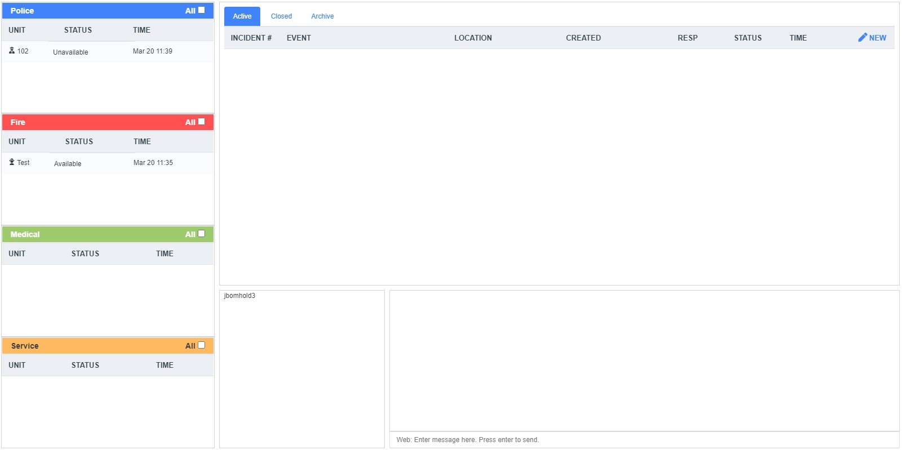
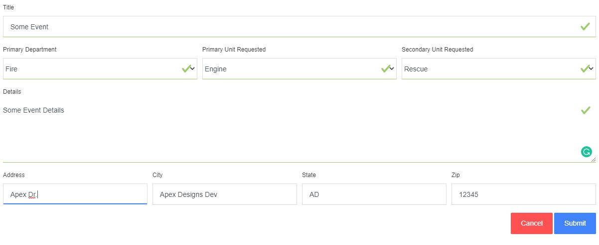
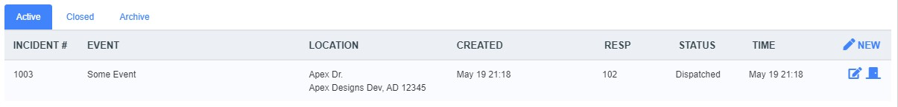
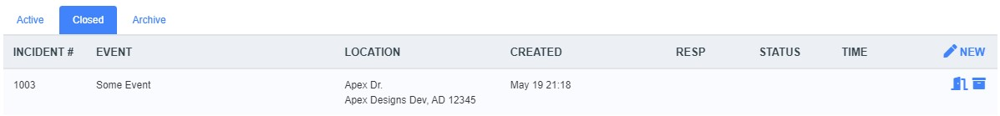
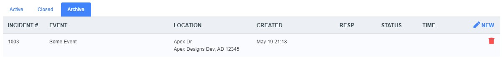
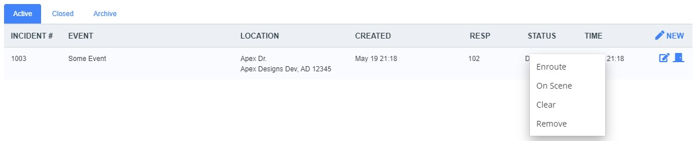

Dispatch

Introduction
Introduce in Version 1. Dispatch has been a stable of TownControl. Version 3 added the ability to send messages to RadioNetwork radios directly from the website freeing the dispatcher from having to jump back and forth between windows. Version 4 adds color-coding on units. It gives you the ability to change your dispatch callsign in your profile, sort by status than by unit number with an added button to unfiltered units.
Creating an Incident
Click the new icon at the right of the screen. Enter all information you have about the call and hit submit.

Editing an Incident
If you have the ability click the edit icon. Update the data as required and hit submit.
Closing an Incident.
If you have the ability, clicking the door icon will close it. All assigned units, regardless of status, when closing an incident will return to available.

Archiving an Incident.
Under the closed incident tab, users with the ability can click the archive icon to archive the incident.

Deleting an Incident.
Under the archived incident tab, users with the ability can click the delete icon to delete it.

Assigning a unit.
Drag the unit you with you assign to an open incident. They will be hidden from the unit list unless all is checked.
Changing the assigned unit status
Right-click the assigned unit, under the incident, you can select its new status. If you made a mistake, you could click remove to remove it. Once you clear a unit, it will return to the unit list.

Chaning unit status
Right click the unit status you wish to update and set the status to whatever you like.
Chat
You can select a Radio Network Channel from the dropdown list, which will be the default channel chat transmits on. When you first enter the dashboard, the chat messages will default to Web-only.